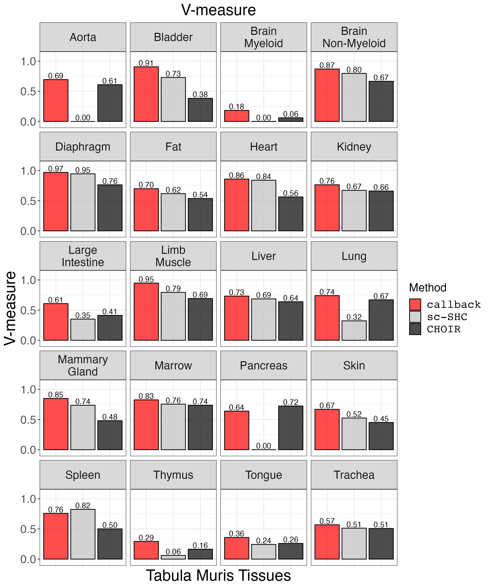
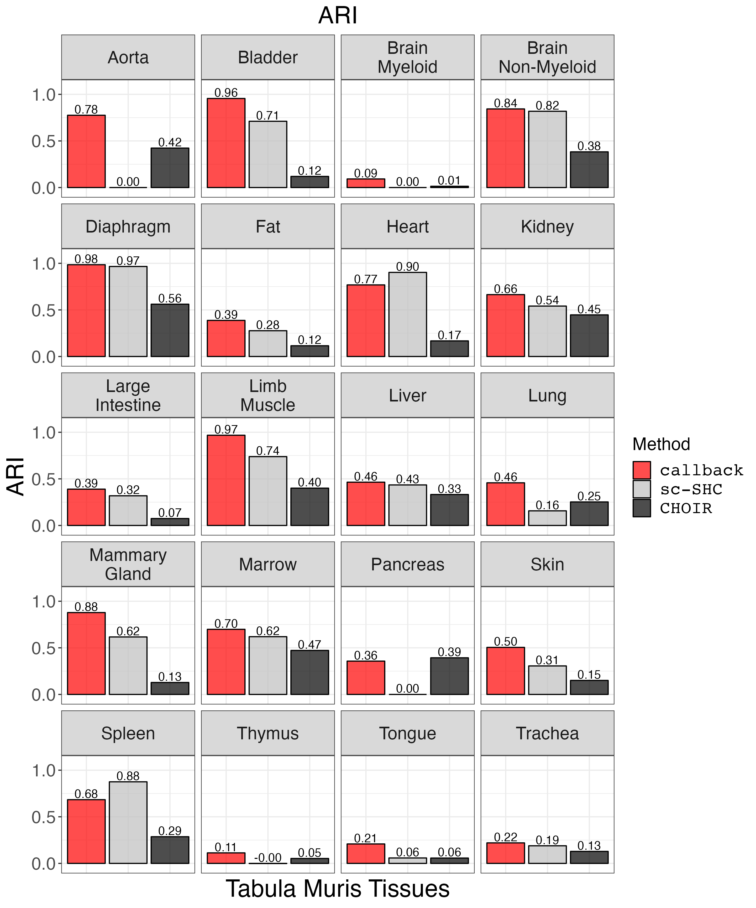
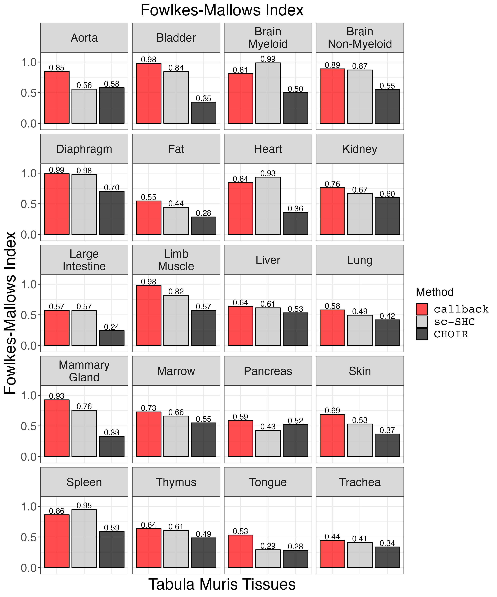
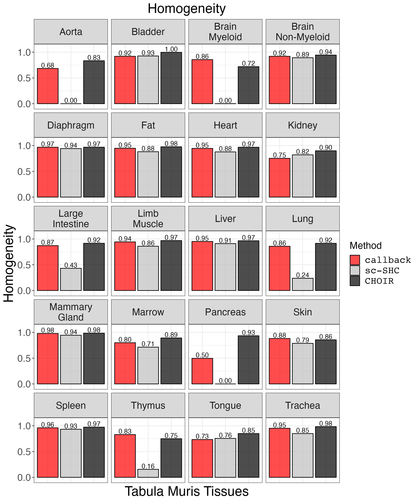
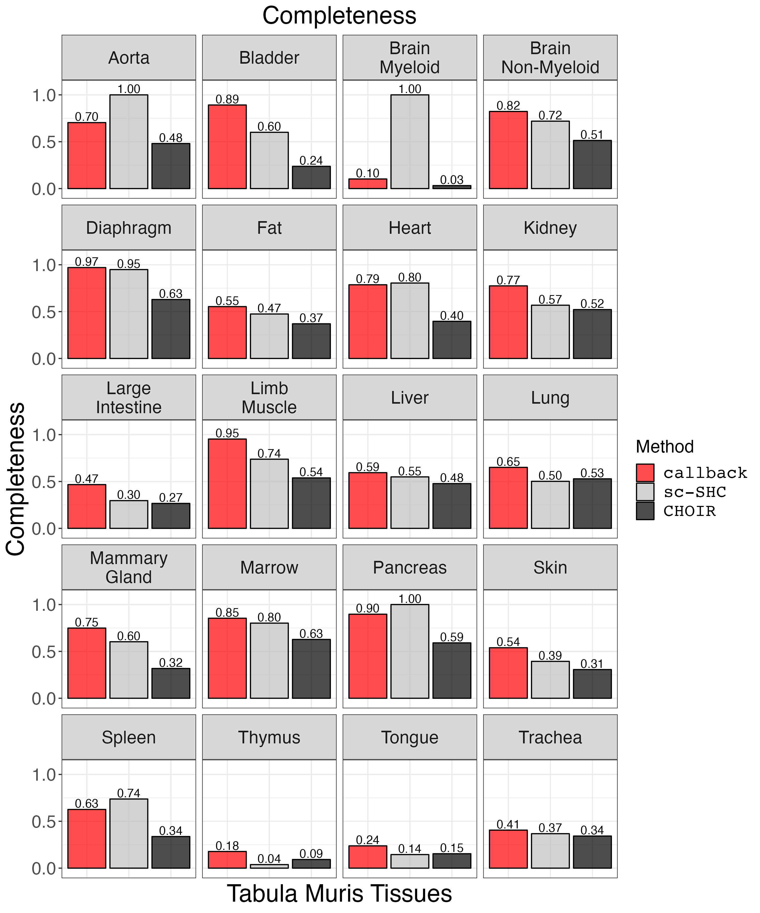
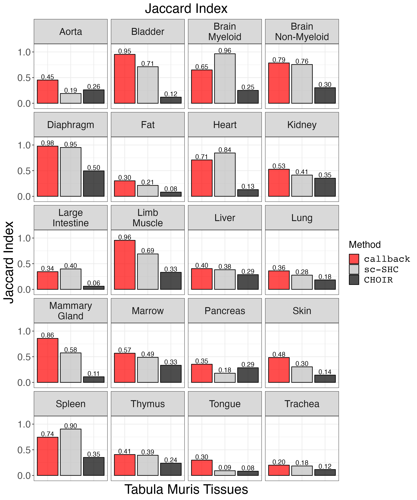
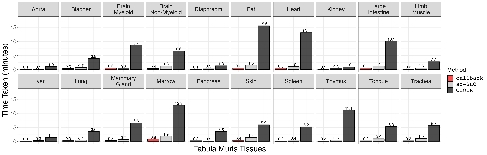

4. Tabula Muris Cluster Benchmarking (Figure 2 and S2-S5)
4_figure2.Rmd
suppressPackageStartupMessages({
library(callbackreproducibility)
library(plyr)
library(Seurat)
library(ggplot2)
library(patchwork)
library(grid)
})First, we load the metrics data from clustering the Tabula Muris data
with callback, sc-SHC, and
CHOIR.
cluster_metrics_df <- read.csv("cluster_metrics_df.csv")
# clean up tissue names
cluster_metrics_df$tissue_name <- gsub("-counts.csv", "", cluster_metrics_df$tissue_name)
cluster_metrics_df$tissue_name <- factor(cluster_metrics_df$tissue_name)
cluster_metrics_df$tissue_name <- plyr::revalue(cluster_metrics_df$tissue_name, c("Brain_Myeloid" = "Brain\nMyeloid",
"Brain_Non-Myeloid" = "Brain\nNon-Myeloid",
"Large_Intestine" = "Large\nIntestine",
"Limb_Muscle" = "Limb\nMuscle",
"Mammary_Gland" = "Mammary\nGland"))Plot V-measure.
vmeasure_plot <- clustering_metrics_facet_plot(cluster_metrics_df, "v_measure_results", "V-measure")
ggsave("vmeasure_plot.png", vmeasure_plot, width = 2 * 1440, height = 2.4 * 1440, units = 'px')
Plot ARI.
ari_plot <- clustering_metrics_facet_plot(cluster_metrics_df, "ari", "ARI")
ggsave("ari_plot.png", ari_plot, width = 2 * 1440, height = 2.4 * 1440, units = 'px')
Plot FMI.
fm_plot <- clustering_metrics_facet_plot(cluster_metrics_df, "fowlkes_mallows_results", "Fowlkes-Mallows Index")
ggsave("fm_plot.png", fm_plot, width = 2 * 1440, height = 2.4 * 1440, units = 'px')
Plot homogeneity.
homogeneity_plot <- clustering_metrics_facet_plot(cluster_metrics_df, "homogeneity_results", "Homogeneity")
ggsave("homogeneity_plot.png", homogeneity_plot, width = 2 * 1440, height = 2.4 * 1440, units = 'px')
Plot completeness.
completeness_plot <- clustering_metrics_facet_plot(cluster_metrics_df, "completeness_results", "Completeness")
ggsave("completeness_plot.png", completeness_plot, width = 2 * 1440, height = 2.4 * 1440, units = 'px')
Plot Jaccard Similarity Index.
jaccard_plot <- clustering_metrics_facet_plot(cluster_metrics_df, "jaccard_results", "Jaccard Index")
ggsave("jaccard_plot.png", jaccard_plot, width = 2 * 1440, height = 2.4 * 1440, units = 'px')
Next, we compare the timing results for the Tabula Muris tissues. First, we load the data and do some minor data cleaning.
tissue_timing_df <- read.csv("tissue_timing_df.csv", row.names = 1)
# order factor levels
tissue_timing_df$method<- factor(tissue_timing_df$method, levels=c("callback", "sc-SHC", "CHOIR"))
# remove underscores from tissue names
tissue_timing_df$tissue <- gsub("_", "\n", tissue_timing_df$tissue)We plot the timing data.
small_text_size <- 16
large_text_size <- 22
p <- ggplot2::ggplot(tissue_timing_df, ggplot2::aes(x=method, y=time, fill=method, label=sprintf("%0.1f", round(time, digits = 1)))) +
ggplot2::geom_bar(stat = "identity", alpha = 0.7, colour = 'black') +
ggplot2::facet_wrap(~tissue, nrow = 2) +
ggplot2::xlab("Tabula Muris Tissues") +
ggplot2::ylab("Time Taken (minutes)") +
ggplot2::labs(fill = "Method") +
ggplot2::ylim(c(0,18)) +
ggplot2::scale_fill_manual(values = c("red", "grey", "black"), labels = c("callback", "sc-SHC", "CHOIR")) +
ggplot2::theme_bw() +
ggplot2::theme(axis.ticks.x = ggplot2::element_blank(),
axis.text.x = ggplot2::element_blank(),
axis.text = ggplot2::element_text(size = small_text_size),
axis.title = ggplot2::element_text(size = large_text_size),
strip.text = ggplot2::element_text(size = small_text_size),
legend.text = ggplot2::element_text(size = small_text_size, family = "Courier"),
legend.title = ggplot2::element_text(size = small_text_size)) +
geom_text(vjust = -0.2)
ggsave("choir_timing.png", p, width = 4 * 1440, height = 4 * 460, units = "px")
Finally, we plot UMAPs for selected tissues.
diaphragm <- readRDS(file = "Diaphragmcluster_results_seurat.rds")
limb_muscle <- readRDS(file = "Limb_Musclecluster_results_seurat.rds")
# remove NAs
limb_muscle <- subset(limb_muscle, subset = cell_ontology_class %in% levels(factor(limb_muscle@meta.data$cell_ontology_class)))
diaphragm <- subset(diaphragm, subset = cell_ontology_class %in% levels(factor(diaphragm@meta.data$cell_ontology_class)))
# clean up cell type labels for limb_muscle
#limb_muscle@meta.data$cell_ontology_class[limb_muscle@meta.data$cell_ontology_class == ""] <- "cardiac neuron"
#limb_muscle@meta.data$cell_ontology_class <- trimws(limb_muscle@meta.data$cell_ontology_class, whitespace = " cell")
# shorten cell type labels for diaphragm
#diaphragm@meta.data$cell_ontology_class <- trimws(diaphragm@meta.data$cell_ontology_class, whitespace = " cell")
# sort levels by size of group (limb_muscle)
limb_muscle@meta.data$cell_ontology_class <- as.factor(limb_muscle@meta.data$cell_ontology_class)
sorted_limb_muscle_clusters <- names(sort(summary(as.factor(na.omit(limb_muscle@meta.data$cell_ontology_class))), decreasing = TRUE))
limb_muscle@meta.data$cell_ontology_class <- factor(limb_muscle@meta.data$cell_ontology_class, levels = sorted_limb_muscle_clusters)
# sort levels by size of group (diaphragm)
diaphragm@meta.data$cell_ontology_class <- as.factor(diaphragm@meta.data$cell_ontology_class)
sorted_diaphragm_clusters <- names(sort(summary(as.factor(na.omit(diaphragm@meta.data$cell_ontology_class))), decreasing = TRUE))
diaphragm@meta.data$cell_ontology_class <- factor(diaphragm@meta.data$cell_ontology_class, levels = sorted_diaphragm_clusters)
y_limits <- c(-30, 12)
x_limits <- c(-20, 20)
legend_location <- c(0.1, 0.2)
tissue <- limb_muscle
limb_muscle_curated_scatter <- custom_scatter(tissue, reduction = "umap", group_by = "cell_ontology_class", x_title = "UMAP 1", y_title = "UMAP 2", pt.size = 4) +
theme(legend.position = legend_location) + guides(color=guide_legend(ncol=2)) +
xlim(x_limits) + ylim(y_limits) +
scale_colour_discrete(labels = function(x) stringr::str_wrap(x, width = 15))
limb_muscle_default_scatter <- custom_scatter(tissue, reduction = "umap", group_by = "seurat_clusters", x_title = "UMAP 1", y_title = "UMAP 2", pt.size = 4) +
NoLegend() + xlim(x_limits) + ylim(y_limits)
limb_muscle_callback_scatter <- custom_scatter(tissue, reduction = "umap", group_by = "callback_idents", x_title = "UMAP 1", y_title = "UMAP 2", pt.size = 4) +
NoLegend() + xlim(x_limits) + ylim(y_limits)
limb_muscle_scSHC_scatter <- custom_scatter(tissue, reduction = "umap", group_by = "scSHC_clusters", x_title = "UMAP 1", y_title = "UMAP 2", pt.size = 4) +
NoLegend() + xlim(x_limits) + ylim(y_limits)
limb_muscle_CHOIR_scatter <- custom_scatter(tissue, reduction = "umap", group_by = "CHOIR_clusters_0.05", x_title = "UMAP 1", y_title = "UMAP 2", pt.size = 4) +
NoLegend() + xlim(x_limits) + ylim(y_limits)
tissue <- diaphragm
diaphragm_curated_scatter <- custom_scatter(tissue, reduction = "umap", group_by = "cell_ontology_class", x_title = "UMAP 1", y_title = "UMAP 2", pt.size = 4) +
theme(legend.position = legend_location) +
guides(color=guide_legend(ncol=2)) +
xlim(x_limits) + ylim(y_limits) +
scale_colour_discrete(labels = function(x) stringr::str_wrap(x, width = 15))
diaphragm_default_scatter <- custom_scatter(tissue, reduction = "umap", group_by = "seurat_clusters", x_title = "UMAP 1", y_title = "UMAP 2", pt.size = 4) +
NoLegend() + xlim(x_limits) + ylim(y_limits)
diaphragm_callback_scatter <- custom_scatter(tissue, reduction = "umap", group_by = "callback_idents", x_title = "UMAP 1", y_title = "UMAP 2", pt.size = 4) +
NoLegend() + xlim(x_limits) + ylim(y_limits)
diaphragm_scSHC_scatter <- custom_scatter(tissue, reduction = "umap", group_by = "scSHC_clusters", x_title = "UMAP 1", y_title = "UMAP 2", pt.size = 4) +
NoLegend() + xlim(x_limits) + ylim(y_limits)
diaphragm_CHOIR_scatter <- custom_scatter(tissue, reduction = "umap", group_by = "CHOIR_clusters_0.05", x_title = "UMAP 1", y_title = "UMAP 2", pt.size = 4) +
NoLegend() + xlim(x_limits) + ylim(y_limits)
row_label_1 <- wrap_elements(panel = textGrob('Diaphragm', gp = gpar(fontsize = 64), rot = 90))
row_label_2 <- wrap_elements(panel = textGrob('Limb Muscle', gp = gpar(fontsize = 64), rot = 90))
column_label_1 <- wrap_elements(panel = textGrob('Curated Labels', gp = gpar(fontsize = 64)))
column_label_2 <- wrap_elements(panel = textGrob('callback', gp = gpar(fontsize = 64, fontfamily = "Courier")))
column_label_3 <- wrap_elements(panel = textGrob('sc-SHC', gp = gpar(fontsize = 64, fontfamily = "Courier")))
column_label_4 <- wrap_elements(panel = textGrob('CHOIR', gp = gpar(fontsize = 64, fontfamily = "Courier")))
patchwork_grid <- plot_spacer() + column_label_1 + column_label_2 + column_label_3 + column_label_4 +
row_label_1 + diaphragm_curated_scatter + diaphragm_callback_scatter + diaphragm_scSHC_scatter + diaphragm_CHOIR_scatter +
plot_spacer() + column_label_1 + column_label_2 + column_label_3 + column_label_4 +
row_label_2 + limb_muscle_curated_scatter + limb_muscle_callback_scatter + limb_muscle_scSHC_scatter + limb_muscle_CHOIR_scatter +
plot_layout(widths = c(1, 5, 5, 5, 5),
heights = c(1,3,1,3))
ggsave("fig2_umap_grid.png", patchwork_grid, width = 1.5 * 2^13, height = 2^13, units = "px")